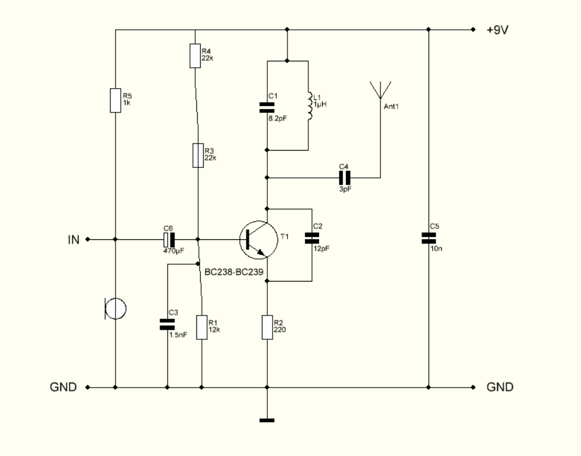
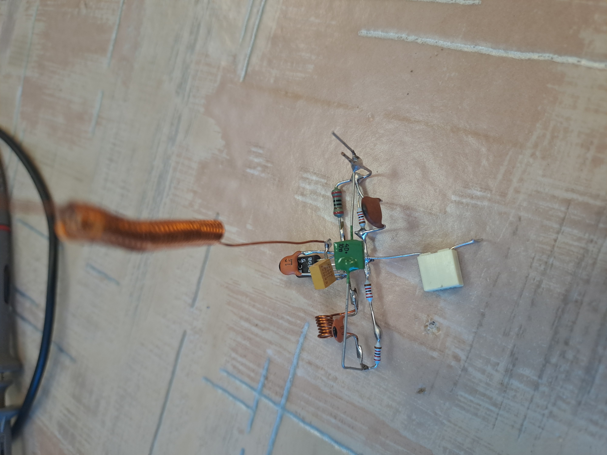

ez a kapcsolási rajza:
Az összeszereléshez néztem egy videót is és ez segített ahhoz hogy össze tudjam rakni.
így néz ki amit csináltam:
Ezeket az alkatrészeket használtam:
| Megnevezés | Jelölés | Érték/típus | darabszám |
| elem | 9V | 1db | |
| ellenállás | R1,R2 | 22k | 2db |
| ellenállás | R3 | 12k | 1db |
| ellenállás | R4 | 220 | 1db |
| kondenzátor | C1 | 470nF | 1db |
| kondenzátor | C2 | 1.5nF | 1db |
| kondenzátor | C3 | 8.2pF | 1db |
| kondenzátor | C4 | 12pF | 1db |
| kondenzátor | C5 | 10nF | 1db |
| tekercs | L1 | 1qH | 1db |
| tranzisztor | T1 | BC238-BC239 | 1db |